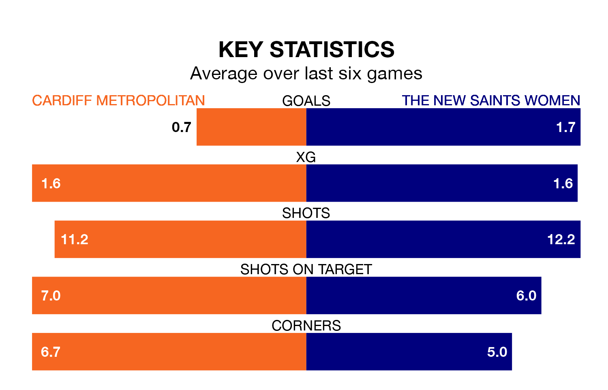

Sunday's early match sees two relegation candidates play each other, as seventh-ranked Cardiff Metropolitan host fifth-placed The New Saints Women.
Cardiff Metropolitan have picked up 12 points from their first 12 Welsh Premier Women's League games, with three wins and three draws.
That is five points less than the New Saints have collected, having won five and drawn two.
With 16 goals in 14 games so far this season, Cardiff Metropolitan are the league's second-lowest scorers with 1.1 goals per game. And they are conceding more than average, letting in 33 goals at a rate of 2.4 per game.
The New Saints, meanwhile, are above average scorers, with 2.3 goals per game, compared to a league average of 1.8. They have conceded 2.8 goals per game.
In the last 10 years, Cardiff Metropolitan and The New Saints have played each other on eight occasions. Cardiff Metropolitan won four of them, The New Saints three, and they drew once.
On average, Cardiff Metropolitan scored 2.8 goals and the New Saints 2.2 in those matches.
Their last meeting was on December 17, when The New Saints won 4-1 at home.
The hosts are in bad form in the Welsh Premier Women's League, with one win and a draw from their last six games.
And also with a win and a draw over that period, the New Saints' form is identical – they have both taken four points from 18.
Cardiff Metropolitan's last match was on February 11, a 2-2 draw against Wrexham Women.
The New Saints drew 3-3 with Aberystwyth Town last time out, also on February 11.
Updated: 09:34 (UTC), 08/03/24